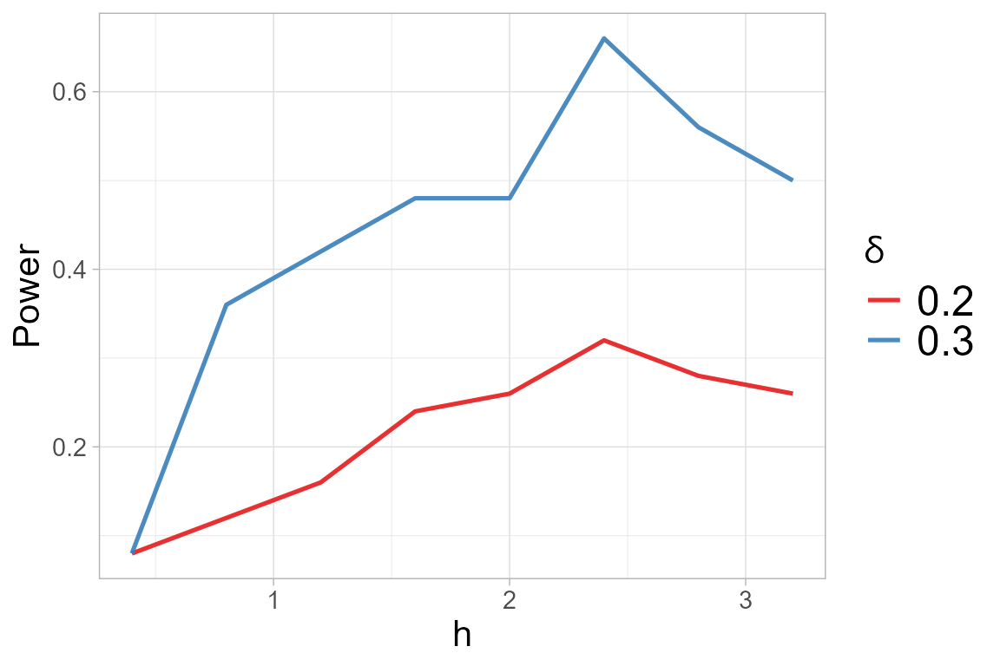

Non-parametric two-sample test
The quadratic distance between two probability distributions \(F\) and \(G\) is defined as:
\[ d_{K}(F,G) = \int\int K(x,y) d(F-G)(x) d(F-G)(y), \]
where \(G\) is a distribution whose goodness of fit we wish to assess, and \(K\) denotes the Normal kernel defined as:
\[ K(\mathbf{s}, \mathbf{t}) = (2 \pi)^{-d/2} \left(\det{\mathbf{\Sigma}_h}\right)^{-\frac{1}{2}} \exp\left\{-\frac{1}{2}(\mathbf{s} - \mathbf{t})^\top \mathbf{\Sigma}_h^{-1}(\mathbf{s} - \mathbf{t})\right\}, \]
for every \(\mathbf{s}, \mathbf{t} \in \mathbb{R}^d \times \mathbb{R}^d\), with covariance matrix \(\mathbf{\Sigma}_h = h^2 I\) and tuning parameter.
Let \(x_1, x_2, \ldots, x_{n_1} \sim F\) and \(y_1, y_2, \ldots, y_{n_2} \sim G\) be random samples from the distributions \(F\) and \(G\), respectively. We test the null hypothesis that the two samples are generated from the same distribution, that is:
\[ H_0: F = G \]
vs
\[ H_1: F \not = G. \]
We generate the samples \(x = (x_1, \ldots,x_n)\) from a standard normal distribution \(N_d(0,I_d)\) and \(y = (y_1, \ldots,y_n)\) from a skew-normal distribution \(SN_d(0,I_d, \lambda)\), where \(d=4\), \(n=100\) and \(\lambda= (0.5,\ldots,0.5)\).
library(sn)
library(mvtnorm)
library(QuadratiK)
n <- 100
d <- 4
skewness_y <- 0.5
set.seed(2468)
x_2 <- rmvnorm(n, mean = rep(0,d))
y_2 <- rmsn(n=n, xi=0, Omega = diag(d), alpha=rep(skewness_y,d))The two-sample test can be performed by providing the two samples to
be compared as x and y to the
kb.test() function. If a value of \(h\) is not provided, the function
automatically performs the function select_h.
##
## Kernel-based quadratic distance two-sample test
## U-statistics Dn Trace
## ------------------------------------------------
## Test Statistic: 1.679763 2.312427
## Critical Value: 1.087455 1.497868
## H0 is rejected: TRUE TRUE
## CV method: subsampling
## Selected tuning parameter h: 1.6We can display the chosen optimal value of \(h\) together with the power plot obtained
versus the considered \(h\), for the
alternatives \(\delta\) in the
select_h() function.
two_test@h$h_sel## [1] 1.6
two_test@h$power.plot
For the two-sample case, the summary function provides
the results from the test and the descriptive statistics per variable
and per group. Additionally, it generates the qq-plots comparing the
quantiles of the two groups for each variable.
summary_two <- summary(two_test)
##
## Kernel-based quadratic distance two-sample test
## Statistic Test_Statistic Critical_Value Reject_H0
## 1 Dn 1.679763 1.087455 TRUE
## 2 Trace 2.312427 1.497868 TRUE
summary_two$summary_tables## [[1]]
## Group 1 Group 2 Overall
## mean -0.005393522 0.3197861 0.1571963
## sd 1.039119207 0.9094193 0.9875137
## median -0.019317321 0.4448058 0.1601955
## IQR 1.562613453 1.3612937 1.4292426
## min -2.675477796 -1.4256211 -2.6754778
## max 2.151784802 2.9375947 2.9375947
##
## [[2]]
## Group 1 Group 2 Overall
## mean -0.10005083 0.1936138 0.04678149
## sd 1.10476260 1.0556439 1.08777010
## median -0.07955849 0.2235325 0.10130247
## IQR 1.48816630 1.4716179 1.41498342
## min -3.22222061 -2.4336333 -3.22222061
## max 2.50192633 2.6879362 2.68793623
##
## [[3]]
## Group 1 Group 2 Overall
## mean -0.006524772 0.1701261 0.08180065
## sd 0.958942739 0.9524916 0.95742170
## median -0.039301279 0.1887394 0.11877637
## IQR 1.329868172 1.4657107 1.40312077
## min -2.860006689 -2.1762183 -2.86000669
## max 1.923763114 2.4237195 2.42371949
##
## [[4]]
## Group 1 Group 2 Overall
## mean -0.06757686 0.2236458 0.07803449
## sd 0.98684958 0.9862135 0.99481815
## median -0.03258747 0.1097711 0.05517931
## IQR 1.30933016 1.4088334 1.39890664
## min -2.29625537 -2.1827156 -2.29625537
## max 2.40795077 2.9929942 2.99299420The figure automatically generated by the summary
function on the result of the two-sample test displays the qq-plots
between the two samples with a table of the standard descriptive
statistics for each variable, computed per group and overall.
Select h
The search for the optimal value of the tuning parameter
\(h\) can be performed independently
from the test computation using the select_h function. It
requires the two samples, provided as x and y,
and the considered family of alternatives.
two_test_h <- select_h(x=x_2, y=y_2, alternative = "skewness")The code is not evaluated since we would obtain the same results.
Note
Notice that the test statistics for two-sample testing coincide with
the \(k\)-sample test statistics when
\(k=2\). Hence, alternatively the two
sample tests can be performed providing the two samples together as
x and indicating the membership to the groups with the
argument y.
x_pool <- rbind(x_2,y_2)
y_memb <- rep(c(1,2),each=n)
h <- two_test@h$h_sel
set.seed(2468)
kb.test(x=x_pool, y=y_memb, h=h)##
## Kernel-based quadratic distance k-sample test
## U-statistics Dn Trace
## ------------------------------------------------
## Test Statistic: 1.679763 2.312427
## Critical Value: 1.087455 1.497868
## H0 is rejected: TRUE TRUE
## CV method: subsampling
## Selected tuning parameter h: 1.6See the k-sample test vignette for more details.
References
Markatou Marianthi & Saraceno Giovanni (2024). “A Unified
Framework for Multivariate Two- and k-Sample Kernel-based Quadratic
Distance Goodness-of-Fit Tests.”
https://doi.org/10.48550/arXiv.2407.16374